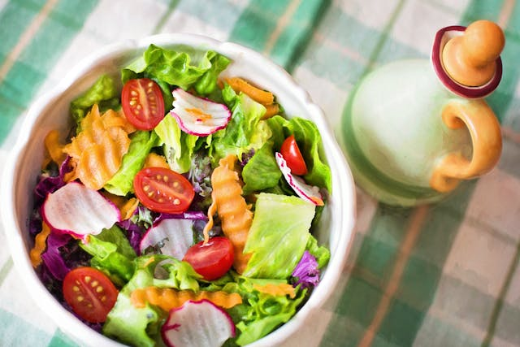
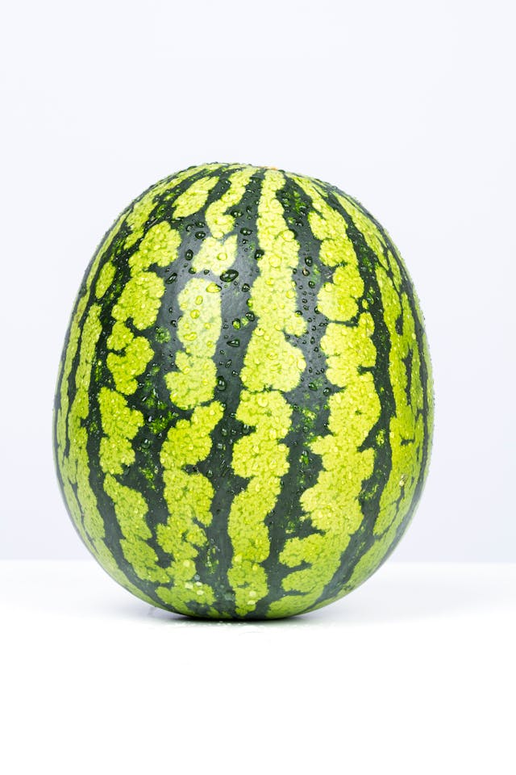
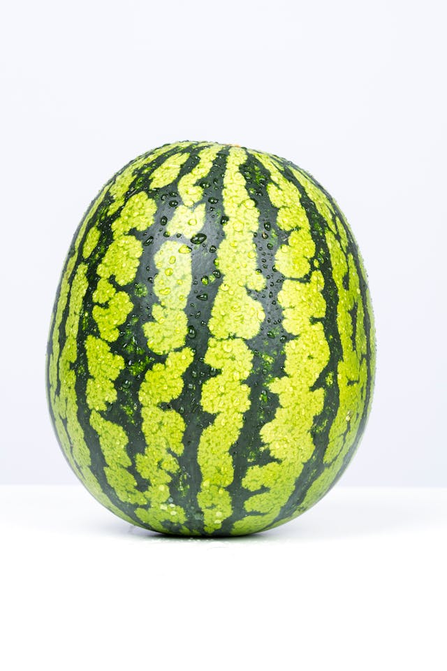

Classes of Food
Carbohydrates
Carbohydrate molecules are made up of hydrogen atoms, oxygen, and carbon. They can be classified according to the number of monomer units in them. Therefore, they can be divided into polysaccharides, monosaccharides, and disaccharides.
- rice
- wheat
- maize
- yam
- bread


Protein
Protein molecules comprise hydrogen, oxygen and hydrogen, carbon, and nitrogen. This nitrogen is an essential part of the amino acids needed for our body. The functions of food with proteins include building cells, maintaining muscles, and improving metabolism. Our body structure is mostly made up of protein.
- meat
- eggs
- milk
- fish
- beans

Fats
Saturated fats are where all carbon atoms are bonded to hydrogen atoms. Unsaturated fats are where carbon is usually connected with double bonds with a few hydrogen molecules.
- cashew nuts
- vegetables
- groundnuts
- avocados
- milk

Fiber
Fiber is defined as a type of carbohydrate that is not absorbed by human beings. Fiber in the diet is usually made up of cellulose. It’s a large carbohydrate that can’t be digested by our body because it lacks enzymes.
- oranges
- onions
- beans
- broccoli
- garlic

Minerals
Minerals can be defined as chemical elements that are needed by living things. Elements are less needed for our body, but they are also essential to keeping us healthy.
- calcium
- iron
- meat
- fish
- vegatables

Vitamins
Vitamins are another nutrient that is not needed in large quantities but plays an essential role in our body.Vitamins are an essential part of our immune system as it helps us to regulate and maintain the healthy process of our body. They can be found in almost any product on the Earth.
- watermelon
- grapes
- pineapples
- apple
- oranges
 

Water
-
Water is an essential part of our food. Human is essentially 80% water. Therefore, we need water to keep that balance to survive and stay healthy. Fortunately, water can be found in any product.
- watermelon
- cucumber
- pineapple
to read more